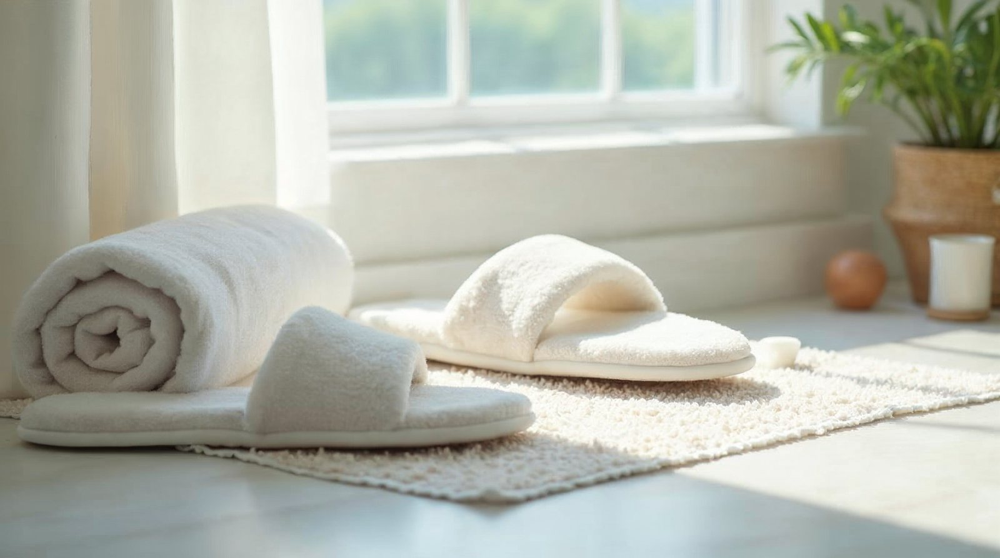
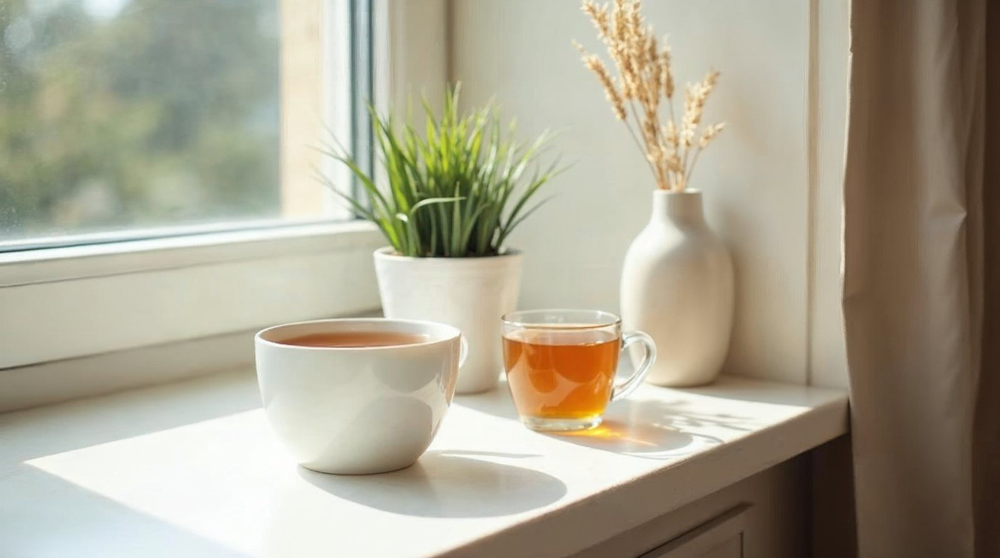
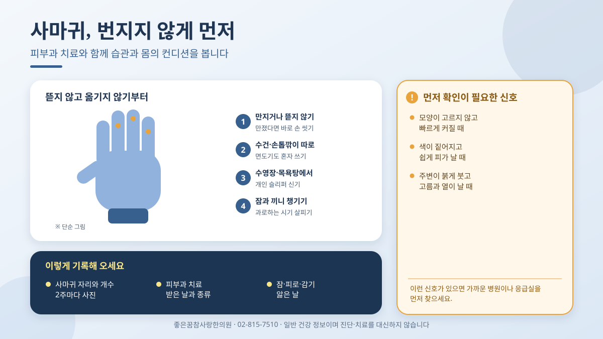

이종호 한의사 감수좋은꿈참사랑한의원 대표원장 (한의사 면허번호 19769)발행 2026-11-26 · 수정 2026-11-26
이 글의 차례
손톱 옆에 작은 좁쌀 같은 것이 하나 올라옵니다. 처음에는 별것 아니라 여겨 손톱깎이로 살짝 뜯어 냈는데, 몇 주 뒤에 보니 바로 옆에 두 개가 더 생겨 있습니다. 발바닥에도 걸을 때마다 콕콕 찌르는 자리가 있어 굳은살인 줄 알았는데 좀처럼 사라지지 않습니다.
진료실에서 사마귀 이야기를 꺼내시는 분들은 대개 조금 지쳐 계십니다. 피부과에서 냉동 치료를 몇 번 받았는데 또 생겼다는 분, 아이 손에 사마귀가 번져 걱정이라는 부모님, 면역이 약해서 그런 거냐고 묻는 분까지 사연이 다양합니다.
사마귀는 피부에 생기는 작은 혹처럼 보이지만, 그 바탕에는 바이러스가 있습니다. 피부의 작은 상처로 들어온 바이러스가 피부 세포를 빨리 자라게 하면서 오돌토돌한 덩어리를 만듭니다. 그래서 손으로 만지고 뜯는 습관이 번짐과 깊이 이어져 있습니다.
저는 사마귀를 볼 때 두 가지를 함께 봅니다. 하나는 피부에 생긴 사마귀 자체를 피부과에서 어떻게 다룰지, 다른 하나는 사마귀가 자꾸 생기고 오래가는 몸의 컨디션이 어떤지입니다. 이 두 갈래를 나란히 놓고 이야기를 시작합니다.
사마귀는 어떤 상태인가요?
사마귀는 사람유두종바이러스라는 바이러스가 피부 바깥층에 자리 잡아 생기는 양성 피부 증식입니다. 생긴 자리와 모양에 따라 이름이 조금씩 다릅니다. 손등과 손가락에 흔한 보통 사마귀, 발바닥에 생기는 발바닥 사마귀, 얼굴과 손등에 납작하게 여러 개 생기는 편평 사마귀가 대표적입니다.
보통 사마귀는 표면이 거칠고 오돌토돌하며, 가까이 보면 작은 검은 점이 박혀 있는 것처럼 보이기도 합니다. 이 점은 사마귀 속으로 자라 들어간 가는 혈관이 굳은 자국입니다. 발바닥 사마귀는 체중에 눌려 안쪽으로 자라서 걸을 때 콕콕 찌르는 통증이 생기기 쉽습니다.
편평 사마귀는 피부색이나 연한 갈색의 납작한 작은 구진이 여러 개 모여 나타납니다. 면도나 긁은 자리를 따라 줄지어 생기기도 해서, 여드름이나 잡티로 오해하고 손을 대다가 더 번지는 경우가 많습니다.
왜 사마귀가 생기고 자꾸 번질까요
사마귀 바이러스는 생각보다 우리 주변에 흔합니다. 다만 건강한 피부는 바이러스가 들어오기 어려운 벽을 갖고 있습니다. 손톱 옆 거스러미, 갈라진 발뒤꿈치, 면도 상처처럼 피부에 작은 틈이 생기면 그 틈으로 바이러스가 자리를 잡습니다.
번지는 길은 대체로 이렇습니다.
- 사마귀를 손톱으로 뜯거나 깎은 뒤 그 손으로 다른 곳을 만질 때
- 손톱을 물어뜯거나 손톱 옆 거스러미를 잡아 뜯는 습관
- 수영장, 목욕탕, 헬스장 탈의실을 맨발로 다닐 때
- 수건, 손톱깎이, 면도기를 함께 쓸 때
- 사마귀가 있는 자리를 면도하거나 긁을 때
같은 환경에 있어도 누구는 사마귀가 생기고 누구는 생기지 않습니다. 피부의 상태와 몸의 방어력이 함께 작용하기 때문입니다. 잠이 부족하거나 과로가 이어질 때, 큰 병을 앓고 난 뒤, 면역을 누르는 약을 드시는 동안에는 사마귀가 잘 생기고 오래가는 경향이 있습니다.
사마귀는 생긴 뒤 바로 보이지 않고 몇 주에서 몇 달 뒤에 모습을 드러내기도 합니다. 그래서 언제 어디서 옮았는지 짐작하기 어렵고, 하나를 치료했는데 근처에 새로 올라오는 것처럼 느껴지는 일이 생깁니다.
티눈이나 굳은살과는 어떻게 다를까요?
발바닥에 생긴 사마귀는 티눈이나 굳은살과 자주 헷갈립니다. 굳은살은 넓고 평평하게 두꺼워지며 대개 눌러도 크게 아프지 않습니다. 티눈은 가운데 단단한 심이 박혀 있어 위에서 누를 때 아픈 경우가 많습니다.
발바닥 사마귀는 옆에서 꼬집듯이 잡을 때 더 아픈 경우가 많고, 표면을 살짝 깎아 보면 작은 검은 점들이 보이기도 합니다. 피부 결이 사마귀 자리에서 끊겨 보이는 것도 차이입니다. 굳은살과 티눈은 피부 결이 그대로 이어지는 경우가 많습니다.
그렇다고 집에서 깎아 보며 확인하시는 것은 권하지 않습니다. 사마귀라면 깎은 도구와 손을 통해 번질 수 있기 때문입니다. 헷갈리면 피부과에서 확인을 받으시는 것이 가장 정확합니다. 티눈이라면 신발과 걸음걸이를, 사마귀라면 번지지 않는 습관을 먼저 챙기게 되어 살필 방향이 달라집니다.
얼굴에 생긴 편평 사마귀는 여드름, 비립종, 잡티와도 헷갈립니다. 여드름은 붉고 염증이 있다가 사라지고, 비립종은 하얗고 단단한 좁쌀 같은 모양입니다. 납작하고 여러 개가 줄지어 늘어난다면 사마귀일 가능성을 함께 생각해 봅니다.

사마귀가 있을 때 생활에서 자주 하는 실수
첫째, 손톱깎이나 칼로 직접 잘라 내는 것입니다. 겉은 잠깐 깨끗해지지만 바이러스가 있는 조직이 남아 있고, 상처를 통해 주변으로 번지기 쉽습니다. 피가 나면 그 자리에 다시 생기는 경우도 많습니다.
둘째, 인터넷에서 본 방법으로 강한 산이나 자극적인 것을 바르는 것입니다. 주변의 건강한 피부까지 상해서 오히려 새로운 틈이 생기고, 흉이 남을 수 있습니다. 약국에서 파는 사마귀 약을 쓰실 때도 약사나 피부과 선생님께 사용법을 확인하세요.
셋째, 한 번 치료하면 끝이라고 여기는 것입니다. 사마귀는 여러 번에 걸쳐 치료하는 경우가 흔하고, 치료 사이의 간격을 지키는 것이 중요합니다. 중간에 그만두면 남은 사마귀가 다시 자라기 쉽습니다.
피부과에서는 보통 어떤 치료를 받나요?
피부과에서는 사마귀의 자리와 크기, 개수에 따라 치료를 고릅니다. 액체질소로 사마귀를 얼리는 냉동 치료가 흔하고, 각질을 녹이는 바르는 약, 레이저나 전기로 태워 없애는 방법 등이 쓰입니다. 어떤 방법이 맞을지는 직접 보고 정하게 됩니다.
냉동 치료는 한 번에 끝나기보다 몇 주 간격으로 여러 번 받는 경우가 많습니다. 치료 뒤에는 물집이 잡히거나 딱지가 앉았다가 떨어지는데, 이때 딱지를 일부러 떼지 않고 자연스럽게 떨어지도록 두시는 것이 좋습니다. 치료 사이 간격은 피부과 안내를 따르시면 됩니다.
사마귀가 오래가는 자리와 시기
손톱 옆과 손톱 밑에 생긴 사마귀는 치료가 까다롭고 오래가는 편입니다. 손을 쓰는 일이 많아 자극이 계속되고, 손톱 아래로 파고들기도 하기 때문입니다. 발바닥 사마귀도 체중이 계속 실려 안쪽으로 깊게 자라서 시간이 걸리는 경우가 많습니다.
시기도 영향을 줍니다. 시험 기간이나 업무가 몰린 시기, 큰 병을 앓고 난 뒤, 출산 뒤처럼 몸이 지친 때에 사마귀가 늘었다는 말씀을 자주 듣습니다. 겨울에는 손발이 트고 갈라져 틈이 많아지고, 여름에는 수영장과 맨발이 늘어 옮을 기회가 많아집니다.
먼저 이렇게 여쭙니다
처음 오시면 저는 대략 이런 순서로 여쭙니다. 미리 생각해 오시면 이야기가 훨씬 수월해집니다.
- 사마귀가 언제 처음 생겼고, 지금은 몇 개 정도인가요?
- 피부과에서 받은 치료가 있다면 어떤 치료를 몇 번 받으셨나요?
- 손톱을 물어뜯거나 거스러미를 뜯는 습관이 있나요?
- 수영장, 목욕탕, 헬스장을 자주 이용하시나요?
- 요즘 잠은 몇 시간 정도 주무시고, 과로하는 일이 이어지고 있나요?
- 드시는 약 가운데 면역을 누르는 약이나 스테로이드가 있나요?
함께 지내는 가족 가운데 비슷한 사마귀가 있는 분이 있는지도 여쭙니다. 가족이 함께 쓰는 수건이나 욕실 매트, 슬리퍼를 통해 서로 주고받는 경우가 있기 때문입니다.
손과 발의 피부 상태도 직접 살펴봅니다. 손끝이 자주 갈라지는지, 발뒤꿈치가 트는지, 손발에 땀이 많아 늘 축축한지에 따라 생활에서 챙길 부분이 달라집니다. 피부가 너무 마르거나 너무 불어 있으면 모두 틈이 생기기 쉽습니다.
일상에서 먼저 해 볼 수 있는 것
사마귀를 줄이는 첫걸음은 번지지 않게 하는 것입니다. 아래 습관만 지켜도 새로 생기는 사마귀를 줄이는 데 도움이 될 수 있습니다.
- 사마귀를 손으로 만지거나 뜯지 않고, 만졌다면 바로 손 씻기
- 손톱 옆 거스러미는 뜯지 말고 깨끗한 손톱깎이로 정리하기
- 수영장과 목욕탕에서는 개인 슬리퍼 신기
- 수건, 손톱깎이, 면도기는 따로 쓰기
- 사마귀가 있는 자리는 면도를 피하거나 방향을 조심하기
- 손과 발이 갈라지지 않도록 보습하기
발바닥 사마귀가 있다면 발을 늘 마르게 관리해 주세요. 땀이 찬 양말을 오래 신고 있으면 피부가 불어 틈이 생기기 쉽습니다. 양말은 매일 갈아 신고, 신발은 하루씩 번갈아 신어 안쪽을 말려 주시면 좋습니다.
몸의 컨디션도 함께 챙겨 주세요. 잠을 일정한 시각에 자고, 끼니를 거르지 않으며, 과로가 이어지는 시기에는 쉬는 시간을 일부러 만드는 것이 좋습니다. 사마귀만 보지 말고 하루 전체를 돌아보시는 것이 오래가는 관리의 시작입니다.
아이에게 사마귀가 있다면 손을 입에 넣거나 손톱을 무는 습관을 함께 살펴 주세요. 혼내기보다 손을 바쁘게 할 거리를 만들어 주고, 손톱을 짧게 다듬어 주시는 것이 도움이 됩니다. 아이가 쓰는 수건과 슬리퍼는 따로 두고, 학원이나 수영장에 다녀온 날은 손발을 깨끗이 씻고 잘 말려 주세요.
한의원에서 함께 살필 수 있는 경우
- 피부과 치료를 받고 있는데 사마귀가 자꾸 새로 생기는 경우
- 사마귀와 함께 잦은 감기, 피로, 얕은 잠이 이어지는 경우
- 손발이 차고 쉽게 갈라지며 피부가 거친 경우
- 사마귀 치료 과정이 길어지면서 몸과 마음이 지치신 경우
좋은꿈참사랑한의원에 오시면 먼저 아래 '먼저 확인이 필요한' 신호가 없는지부터 봅니다. 그다음 맥을 짚고 사마귀가 난 자리와 피부 상태를 살피며, 잠과 소화, 피로, 감기에 걸리는 횟수를 여쭙니다. 한의학에서는 몸의 바른 기운이 약해진 틈을 함께 봅니다.
진찰한 내용을 바탕으로 생활에서 바꿔 볼 것 하나와 함께 침, 한약 상담 가운데 지금 상태에 맞는 것을 정합니다. 한약을 상의할 때는 드시는 약을 모두 확인하고 신중하게 정합니다. 임신 중이시라면 먼저 알려 주시고, 산부인과 선생님과 상의한 뒤 진료 방향을 정합니다.
사마귀 자체를 제거하는 치료는 피부과에서 받으시도록 안내합니다. 한의원 진료는 피부과 치료를 대신하는 것이 아니라, 그 과정에서 몸의 컨디션과 잠, 피로를 함께 살피며 나란히 가는 것이라고 생각해 주시면 됩니다.
이렇게 기록해 오시면 상담이 쉬워집니다
사마귀는 천천히 변해서 매일 보면 차이를 느끼기 어렵습니다. 2주에 한 번 정도 같은 자리를 같은 각도에서 사진으로 남겨 두시면 좋습니다.
- 사마귀가 있는 자리와 개수, 새로 생긴 날
- 피부과 치료를 받은 날과 치료 종류
- 잠든 시각과 깬 시각, 피로가 심했던 날
- 감기나 몸살을 앓은 날
- 수영장이나 목욕탕을 다녀온 날
사진과 기록을 나란히 놓고 보면 사마귀가 늘어난 시기와 생활의 변화 사이에 연결이 보이기도 합니다. 그것이 다음 걸음을 정하는 실마리가 됩니다.

조급하지 않게 가는 사마귀 관리
사마귀는 하루아침에 생기지 않았듯이 하루아침에 정리되지도 않습니다. 여러 번의 치료와 시간이 필요한 경우가 많아서, 중간에 지치지 않는 것이 무엇보다 중요합니다.
사마귀가 생겼다고 해서 몸이 크게 잘못되었다는 뜻은 아닙니다. 다만 사마귀가 자꾸 늘어나는 시기는 내 몸이 조금 지쳐 있다는 신호일 수 있습니다. 피부과에서 사마귀를 다루는 동안, 잠과 끼니, 쉬는 시간을 함께 돌아보는 기회로 삼아 보세요.
사마귀가 손에 있으면 사람을 만날 때 신경이 쓰이고, 발에 있으면 걷는 것조차 불편합니다. 그 마음의 부담도 진료실에서 편하게 말씀해 주세요. 불편이 어디서 가장 크게 느껴지는지 알면 무엇부터 할지 정하기가 쉬워집니다.
이번 주에는 사마귀를 만지지 않기, 만졌다면 바로 손 씻기, 수건 따로 쓰기 가운데 하나만 골라 지켜 보세요. 다음에 오시면 사진과 기록부터 함께 펼쳐 보겠습니다.
이런 증상은 먼저 확인이 필요합니다
- 모양이 고르지 않고 색이 짙어지며 빠르게 커지거나 쉽게 피가 나는 경우
- 사마귀 주변이 붉게 부어오르고 열감과 고름이 생기며 몸에 열이 나는 경우
이런 신호가 있으면 한의원보다 가까운 병원이나 응급실을 먼저 찾으세요.
함께 읽으면 좋은 글
- 물일을 하고 나면 손끝이 갈라지고 따가운 손 습진(주부습진)은 어떻게 살피나요?
- 손을 자주 씻는 일을 하는데 손가락 사이가 갈라지고 따가울 때는 어떻게 살피나요?
- 손가락에 작은 물집이 잡히고 가려운 한포진은 어떻게 살피나요?
- 잠이 부족하면 피부가 푸석하고 트러블이 나는 이유는 무엇인가요?
- 손바닥·발바닥·겨드랑이에 땀이 너무 많은 다한증은 어떻게 살피나요?

여쭙는 것
- 사마귀가 언제 처음 생겼고, 지금은 몇 개 정도인가요?
- 피부과에서 받은 치료가 있다면 어떤 치료를 몇 번 받으셨나요?
- 손톱을 물어뜯거나 거스러미를 뜯는 습관이 있나요?
생활에서 해 볼 것
- 사마귀를 손으로 만지거나 뜯지 않고, 만졌다면 바로 손 씻기
- 손톱 옆 거스러미는 뜯지 말고 깨끗한 손톱깎이로 정리하기
- 수영장과 목욕탕에서는 개인 슬리퍼 신기
한의원에서 함께 살필 것
- 피부과 치료를 받고 있는데 사마귀가 자꾸 새로 생기는 경우
- 사마귀와 함께 잦은 감기, 피로, 얕은 잠이 이어지는 경우
- 손발이 차고 쉽게 갈라지며 피부가 거친 경우
먼저 확인이 필요한 신호
- 모양이 고르지 않고 색이 짙어지며 빠르게 커지거나 쉽게 피가 나는 경우
- 사마귀 주변이 붉게 부어오르고 열감과 고름이 생기며 몸에 열이 나는 경우
한눈에 보는 표
| 구분 | 핵심 |
|---|---|
| 여쭙는 것 | 사마귀가 언제 처음 생겼고, 지금은 몇 개 정도인가요? 피부과에서 받은 치료가 있다면 어떤 치료를 몇 번 받으셨나요? |
| 생활에서 해 볼 것 | 사마귀를 손으로 만지거나 뜯지 않고, 만졌다면 바로 손 씻기 손톱 옆 거스러미는 뜯지 말고 깨끗한 손톱깎이로 정리하기 |
| 한의원에서 함께 살필 것 | 피부과 치료를 받고 있는데 사마귀가 자꾸 새로 생기는 경우 사마귀와 함께 잦은 감기, 피로, 얕은 잠이 이어지는 경우 |
| 먼저 확인이 필요한 신호 | 모양이 고르지 않고 색이 짙어지며 빠르게 커지거나 쉽게 피가 나는 경우 사마귀 주변이 붉게 부어오르고 열감과 고름이 생기며 몸에 열이 나는 경우 |
자주 묻는 질문
사마귀는 다른 사람에게 옮나요?
피부와 피부가 닿거나 수건, 슬리퍼 같은 물건을 함께 쓰면서 옮을 수 있습니다. 다만 같은 환경에서도 누구나 생기는 것은 아니어서, 피부에 틈이 있는지와 몸의 컨디션이 함께 작용합니다.
사마귀를 손톱깎이로 잘라 내도 되나요?
권하지 않습니다. 바이러스가 있는 조직이 남고 상처를 통해 주변으로 번지기 쉽습니다. 사마귀 제거는 피부과에서 받으시는 것이 좋습니다.
피부과 치료를 받으면서 한의원 진료를 함께 받아도 되나요?
받고 계신 치료를 알려 주시면 그에 맞춰 진료 방향을 정합니다. 한의원에서는 사마귀 자체보다 잠, 피로, 잦은 감기처럼 몸의 컨디션을 함께 살핍니다.
아이 손에 사마귀가 여러 개 생겼는데 어떻게 하나요?
먼저 소아청소년과나 피부과에서 사마귀가 맞는지 확인해 주세요. 집에서는 손을 입에 넣거나 손톱을 무는 습관을 살피고, 수건을 따로 쓰게 해 주시면 좋습니다.
발바닥이 콕콕 아픈데 티눈인지 사마귀인지 어떻게 아나요?
옆에서 잡을 때 더 아프거나 작은 검은 점이 보이면 사마귀일 가능성을 생각합니다. 집에서 깎아 확인하면 번질 수 있으니 피부과에서 확인을 받으세요.
좋은꿈참사랑한의원은 재진 때 지난번 이야기부터 이어서 여쭙니다. 진료시간과 예약은 오시는 길에서 확인하세요.
어디서 상담받을 수 있나요?
좋은꿈참사랑한의원은 서울 동작구 만양로2길 2 신성빌딩 3층·5층(서울 동작구 상도동, 7호선 상도역 3번 출구 근처)에 있습니다. 한의사 3명(이종호 대표원장, 조영기 수석진료원장, 정원영 진료원장)이 진료합니다. 진료시간은 평일 09:30~20:00(점심 13:00~14:00), 토·일·공휴일 09:30~15:00이며, 방문 전 전화로 확인을 권합니다. 예약은 네이버 예약, 카카오톡 상담, 전화 02-815-7510로 받습니다.
이 글은 일반적인 건강 정보이며 개인의 진단이나 치료를 대신하지 않습니다. 증상이 있거나 복용 중인 약이 있다면 진료를 통해 확인하세요. 치료 효과는 개인마다 다를 수 있습니다.
작성 기준: 일반적으로 알려져 있는 건강 정보를 참고해 정리했습니다(대표원장 감수). 증상 기록은 1~2주 동안 하루 1회, 비슷한 시간에 적어 오시면 지난 상태와 비교하기 쉽습니다.